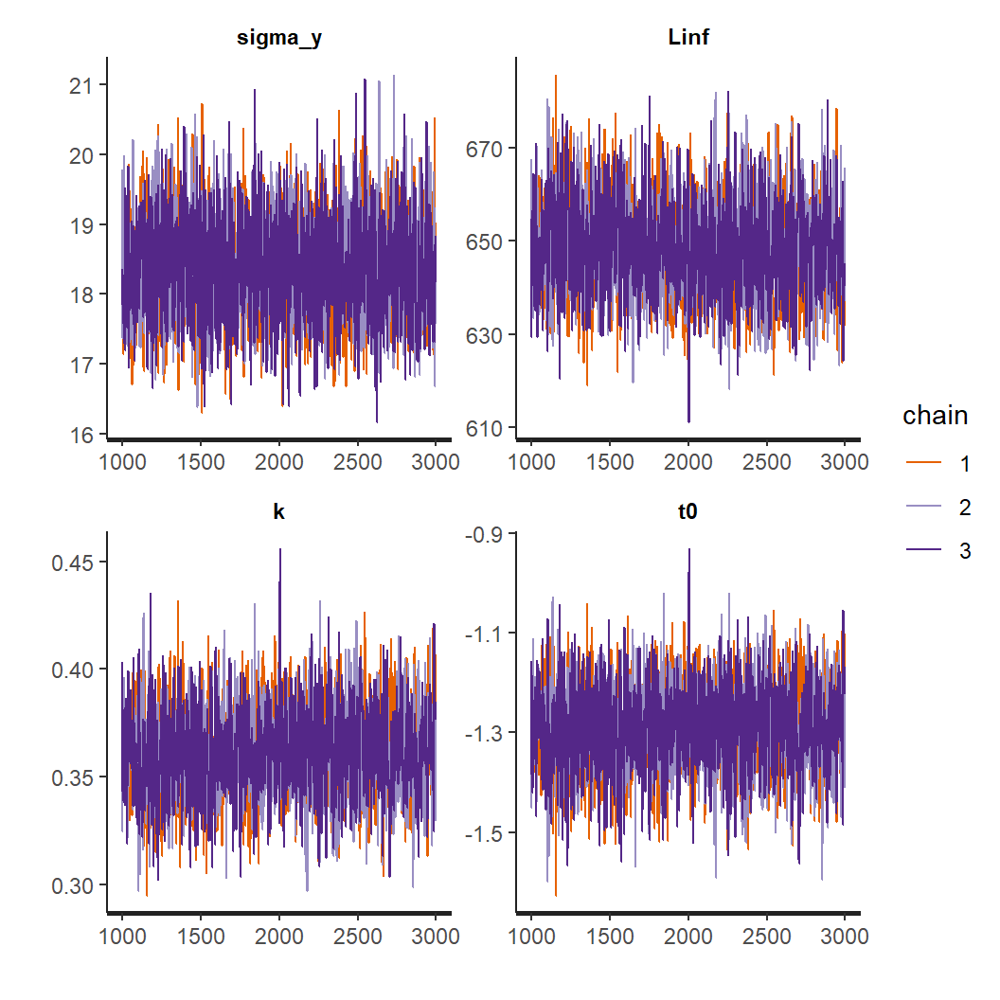
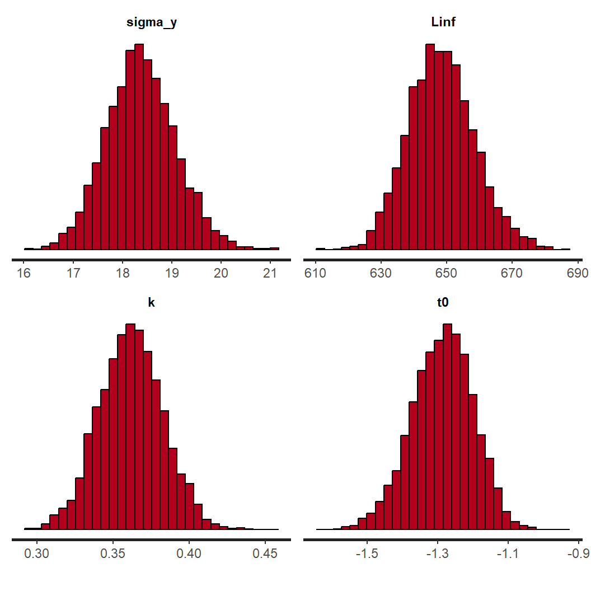
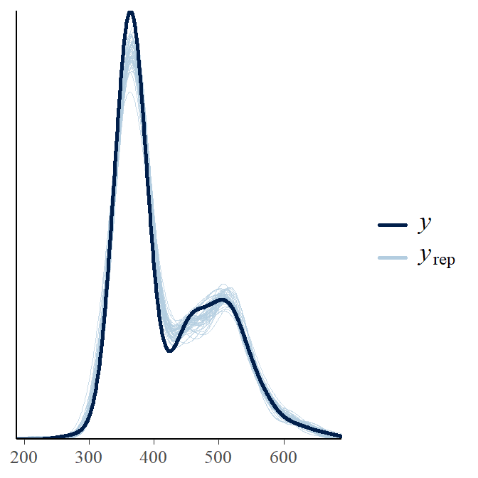
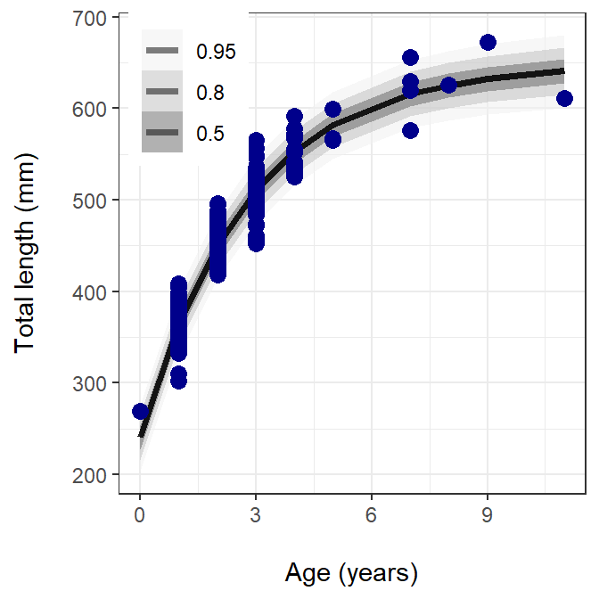

library(FSA)
library(FSAdata) # for data
library(dplyr) # for filter(), select()
library(tidyr) # for transposing data wide to long
library(ggplot2) # for potting
library(rstan) # for fitting Stan models
library(tidybayes) # for plotting posterior results
library(bayesplot) # for plotting posterior predictive checksIntroduction
The use of Bayesian inference in fisheries biology has been increasing. For good reason, as there are many benefits to taking a Bayesian approach. I won’t go into those reasons here but you can read about them in Dorazio (2016) and Doll and Jacquemin (2018). This post assumes you have already decided to use Bayesian methods and will present how to estimate parameters of the von Bertalanffy growth model. Previous posts describe frequentist methods here and here
This is the second post where I describe how to fit a model using Bayesian inference. The first post used Stan with the brms package. This post will use rstan and I will write the full Stan model code.
Both methods will fit the typical three parameter von Bertalanffy growth model
\[ TL_i=L_\infty * (1-e^{(-\kappa * (t_i-t_0))} ) \]
where \(TL_i\) is total length of individual i, \(L_\infty\) is the average maximum length obtained, \(\kappa\) is the Brody growth coefficient, \(t_i\) is the age of individual i, and \(t_0\) is the theoretical age at zero length. To finish the model, an error term is added:
\[ TL_i=L_\infty * (1-e^{(-\kappa * (t_i-t_0))} + \epsilon_i) \] \[ \epsilon_i \sim normal(0,\sigma) \] where \(\epsilon_i\) is a random error term for individual i with a mean of 0 and standard deviation \(\sigma\).
Prior probabilities
At the heart of Bayesian analysis is the prior probability distribution.This post will use non-informative prior probability distributions. When and how to use informative priors when fitting a von Bertalanffy growth model will be discussed in a future post. However, you can read about it in Doll and Jacquemin (2018). The prior probability distributions used in this post are:
| Parameter | Prior Probability Distribution |
|---|---|
| \(L_\infty\) | normal(0,1000) |
| \(\kappa\) | normal(0,10) |
| \(t_0\) | normal(0,10) |
| \(\sigma\) | student-t(3,0,30) |
Stan parameterizes the normal distribution with the mean and standard deviation and the student-t distribution with the degrees of freedom, mean, and standard deviation
Preliminaries
First step is to load the necessary packages
Data
The WalleyeErie2 data available in the FSAdata package was used in previous posts demonstrating von Bertalanffy growth models and will once again be used here. These data are Lake Erie Walleye (Sander vitreus) captured during October-November, 2003-2014. As before, the primary interest here is in the tl (total length in mm) and age variables. The data will also be filtered to focus only on female Walleye from location 1 captured in 2014.
data(WalleyeErie2,package="FSAdata")
wf14T <- WalleyeErie2 %>%
filter(year==2014,sex=="female",loc==1) %>%
select(-year,-sex,-setID,-loc,-grid)
headtail(wf14T)#R| tl w mat age
#R| 1 445 737 immature 2
#R| 2 528 1571 mature 4
#R| 3 380 506 immature 1
#R| 323 488 1089 immature 2
#R| 324 521 1408 mature 3
#R| 325 565 1745 mature 3Next step is to create a list to hold the data used in the model. One important note, the items in this list must match the data used in the model code. For example, we will use tl for total length in the data list and tl must be specified in the Stan data block exactly as tl.
dataList=list(
tl=wf14T$tl,
age=wf14T$age ,
N=length((wf14T$age))
)Initial values
An optional step is to specify initial values for the parameters. It is always good practice to specify initial values, particularly with non-linear and other complex models. I will fit the model using multiple chains and it is advisable to use different starting values for each chain. To accomplish this, we will specify a function and use a random number generator for each parameter Adjust the range for the uniform distribution to cover a large range of values that make sense for your data. You can use other distributions as long as they match the declared range in the model code. In this example, I am using the random uniform function because \(L_\infty\) and \(\kappa\) are restricted to be positive in the model. Therefore, the starting value must be positive.
initsLst <- function() list(
Linf=runif(1, 200, 800),
K=runif(1, 0.05, 3.00),
t0 =rnorm(1, 0, 0.5)
)Stan
Now we can introduce the Stan model code. Stan models are structured with “blocks”. Generally, the minimum number of blocks used is three; data, parameters, and model blocks. In our example, we will use a fourth block, the generated quantities block. All of the blocks must be in a single .stan file. The blocks are presented separately here for demonstration. Other blocks that can be used in Stan are; functions, transformed data, and transformed parameters. See the Stan manual for a description of each.
The data block declares all of the data needed for the model and the data object must match how they are entered in the data list above. There are several different types of data that can be declared. For this example, I use int to declare N, which is the number of observations, as an integer. You’ll also notice that I include a lower bounds for this variable. This isn’t necessary but good practice if your variable has a floor or ceiling. tl is declared as a real data type. The real data type is typically used for single numbers or a vector of numbers. This example declares the real data type as a vector of length N. age is another vector of length N but it is a vector of integers, int.
data {
int<lower=0> N ; // number of observations
real tl[N] ; // Total lengths of individual fish
int age[N] ; // Age of individual fish
}The second block in our model is a parameters block. This block will declare all the estimated parameters in the model. Our model has four parameters. sigma_y is the standard deviation, \(\sigma\), of the individual observations; t0 is the \(t_0\) LVB parameter; Linf is the \(L_\infty\) parameter; and k is the \(\kappa\) parameter. Each is declared as a single real value. All of the parameters are constrained in at least one direction. sigma_y is constrained to be positive using the <lower=0> argument because standard deviations must be positive. t0 is being constrained to be between -5 and 5 using the <lower=-5> and <upper=5> arguments. This is declared based on prior knowledge to prevent the sampler from searching outside these bounds. The remaining two, Linf and k, are only constrained to be positive using <lower=0>.
Setting bounds can help the sampler find the posterior distribution, particularly with complex models. So it is recommended to always set bounds that “make sense”. Use your knowledge of the system and the model to declare these bounds. This is separate from declare your prior probability distribution but setting bounds will influence your prior probability distributions. The priors are set in the model block.
parameters {
real<lower=0> sigma_y; //LVB standard deviation
real<lower=-5, upper=5> t0; //LVB t0 parameter
real<lower=0> Linf; //LVB Linf parameter
real<lower=0> k; //LVB k parameter
}The third block declares the model. The model block starts off with declaring any local variables that might be needed. Note that any variables declared in the model block can’t be referenced in other blocks. In this case, I need a vector ypred of length N to hold the mean total length which is a function of the von Bertlanffy growth model. This is followed by our declaration of prior probability distributions. Stan will automatically assign uniform prior probabilities if a prior is not specified here. I don’t recommend letting Stan declare uniform priors by default. Always be explicit in the prior probability distribution in your model and assign prior probability distributions that are suitable for the parameter and defensible against a skeptical audience. A future post will dive deeper into setting and selecting informative vs non-informative prior probability distribution.
The final part of the model block is the likelihood. This will include a for loop that will iterate through each of the observed values and include the model. Following this is the normal() distribution which specifies the distribution of our observations and is parameterized with the mean y_mean and standard deviation sigma_y. This last line can be indexed over individuals and included in the for loop. Or vectorized outside the loop, as it is written here.
model {
vector[N] ypred; //variable used in the model block only
//The next three lines of code specify reference prior probability distributions.
sigma_y ~ student_t(3,0,40);
Linf ~ normal(0, 1000);
k ~ normal(0, 100);
t0 ~ normal(0, 10);
// calculate likelihood of data
for(i in 1:N){
y_mean[i]= Linf * (1-exp(-(k * (age[i]-t0) )) );
}
tl~normal(y_mean, sigma_y);
}The last block needed is a generated quantities block. This block is used to calculate derived variables, posterior predictions, and to generate model predictions. I will use it here to generate a vector named y_rep of length N that will hold individual predicted observations. y_rep is the posterior predicted values of total length that will be used to plot the observed and model predicted total length. The posterior predicted distribution is generated using the normal_rng function which generates a random value from the normal distribution based on a mean (the model) and standard deviation. The posterior predicted distribution generated in in a for loop to iterate through each observed individual.
generated quantities{
//the next four lines of code generate predicted values to use for inspecting model fit
vector[N] y_rep;
for(i in 1:N){
y_rep[i] = normal_rng(Linf * (1-exp(-(k * (age[i]-t0) )) ) ,sigma_y);
}
}Before sending the model to rstan, the full model code needs to be saved into a file with the .stan extension. For example “Walleye_lvb.stan”. The .stan file also has to be saved in the working directory.
Now it is time to bundle all the pieces together.
#Compile and fit model using Stan
LVBfit <- stan(file='Walleye_lvb.stan', # The file containing the Stan model
data=dataList, # a list containing the data
init=initsLst, # a list containing initial values
chains=3, # number of chains, typically 3 to 4
cores=3, # number of cores for multi-core processing;
# Typically set to match number of chains
iter=3000 , # number of iterations
warmup=1000 , # number of warm up steps to discard
control=list(adapt_delta=0.80, # Adjustments to the algorithm
max_treedepth=15)) # to improve convergence.Assess convergence
Let’s inspect convergence and how well the model fits the data. The first thing to do is to examine the trace plots and histograms of the important model parameters.
plot(LVBfit, plotfun="trace", pars=c("sigma_y","Linf","k","t0"), inc_warmup=FALSE)
plot(LVBfit, plotfun="hist", pars=c("sigma_y","Linf","k","t0"), inc_warmup=FALSE)
The chains appear to have mixed well for all parameters and reached a stationary posterior. This is seen by a unimodal distribution in the histograms and caterpillar plots for each parameter appear “on top” of each other. We can move on to assessing how well the model fits the data using a posterior predictive check.
y_rep <- as.matrix(LVBfit, pars="y_rep") #Extract the posterior predicted observations
ppc_dens_overlay(wf14T$tl, y_rep[1:50, ]) #Density plot of y and y_rep
The y_rep curves do a good job at covering our observations and we can conclude the model does a sufficient job at representing the data. Now we can move on to look at individual parameters.
Posterior summary
Because we included a generated quantities block and are calculating the posterior predicted distribution, our output if very long. The summary(LVBfit) command would return a vary long summary of all the parameters and individual predicted total lengths. Instead, I use the print() function here and only specify the parameters of interest.
print(LVBfit, pars=c("sigma_y","Linf","k","t0"), probs=c(0.025,0.5,0.975),digits_summary=6)#R| Inference for Stan model: anon_model.
#R| 3 chains, each with iter=3000; warmup=1000; thin=1;
#R| post-warmup draws per chain=2000, total post-warmup draws=6000.
#R|
#R| mean se_mean sd 2.5% 50% 97.5% n_eff
#R| sigma_y 18.352312 0.015136 0.736475 16.945576 18.330150 19.882500 2368
#R| Linf 648.606391 0.240547 10.034202 629.432697 648.304389 668.848961 1740
#R| k 0.361698 0.000519 0.021020 0.322883 0.361042 0.405635 1642
#R| t0 -1.286832 0.002090 0.086734 -1.462565 -1.286549 -1.115442 1721
#R| Rhat
#R| sigma_y 0.999861
#R| Linf 1.001330
#R| k 1.001418
#R| t0 1.000857
#R|
#R| Samples were drawn using NUTS(diag_e) at Mon Feb 5 09:10:01 2024.
#R| For each parameter, n_eff is a crude measure of effective sample size,
#R| and Rhat is the potential scale reduction factor on split chains (at
#R| convergence, Rhat=1).The summary table provides the point estimates, 95% credible intervals, Rhat values, and n_eff. The Rhat values are another check to assess model convergence. It is generally accepted that you want Rhat values less than 1.10. The n_eff is also used to assess convergence. n_eff refers to “Effective Sample Size”. Because of the nature of MCMC methods, each successive sample from the posterior will typically be autocorrelated within a chain. Autocorrelation within the chains can increase uncertainty in the estimates. One way to assessing how much autocorrelation is present and big of an effect it might be, is with the “Effective Sample Size”. ESS represents the number of independent draws from the posterior. The ESS will be lower than the actual number of draws and you are looking for a high ESS. It has been recommended that an ESS of 1,000 for each parameter is sufficient Bürkner (2017).
Posterior plotting
The final part is to create a figure with observed and predicted values. This code block is a little different than what was used with brms. Instead of add_predicted_draw(), I have to combine the predicted draws manually then convert them from wide to long.
cbind(tl=wf14T$tl, age=wf14T$age,data.frame(t(y_rep))) %>% # Combine observed data with predictions
pivot_longer(col=-c(tl,age),values_to=".prediction") %>%
ggplot(aes(x=age, y=tl)) +
stat_lineribbon(aes(y=.prediction), .width=c(.95, .80, .50), # regression line and CI
alpha=0.5, colour="black") +
geom_point(data=wf14T, colour="darkblue", size=3) + # raw data
scale_fill_brewer(palette="Greys") +
ylab("Total length (mm)\n") +
xlab("\nAge (years)") +
theme_bw() +
theme(legend.title=element_blank(),
legend.position=c(0.15, 0.85))
The figure above shows the observed data in blue circles, the prediction line as a solid black line, and the posterior prediction intervals (0.50, 0.80, and 0.95) in different shades of gray.
References
Bürkner, P.-C. 2017. Brms: An R Package for Bayesian Multilevel Models Using Stan. Journal of Statistical Software 80:1–28.
Doll, J. C., and S. J. Jacquemin. 2018. Introduction to Bayesian modeling and inference for fisheries scientists. Fisheries 43(3):152–161.
Dorazio, R. M. 2016. Bayesian data analysis in population ecology: Motivations, methods, and benefits. Population Ecology 58:31–44.
Reuse
Citation
BibTeX citation:
@online{doll2024,
author = {Doll, Jason},
title = {Bayesian {LVB} {II} - Rstan},
date = {2024-02-06},
url = {https://fishr-core-team.github.io/fishR//blog/posts/2024-2-6_LVB_Stan},
langid = {en}
}
For attribution, please cite this work as:
Doll, J. 2024, February 6. Bayesian LVB II - rstan. https://fishr-core-team.github.io/fishR//blog/posts/2024-2-6_LVB_Stan.